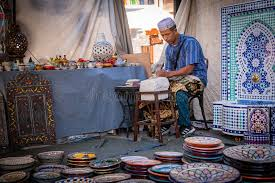
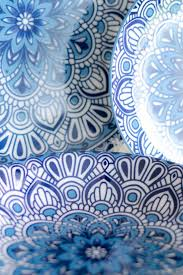
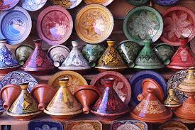
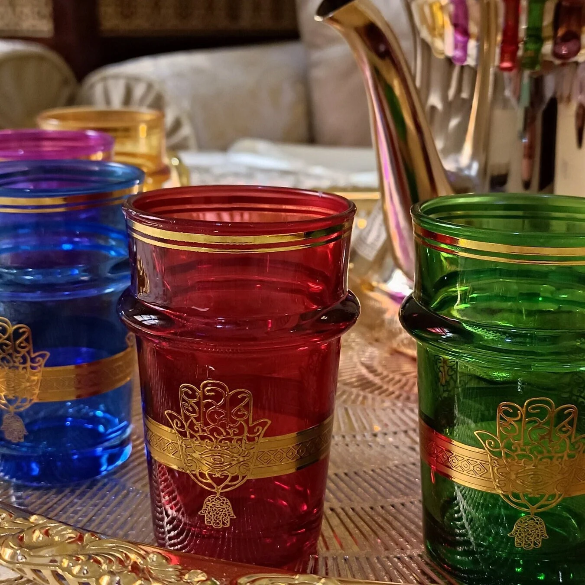
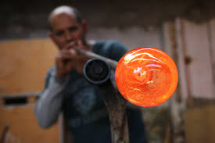
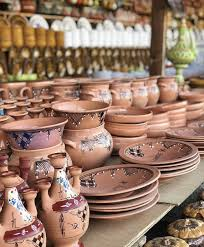
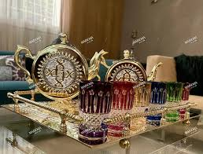
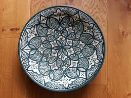
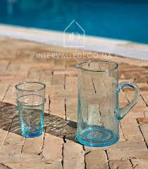
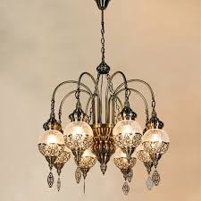

L'Art des Poteries et Verreries Marocaines
Découvrez le savoir-faire millénaire des artisans marocains dans la création de poteries et verreries, un héritage culturel qui allie beauté et fonctionnalité.

Le Maroc est réputé pour son artisanat d'exception, notamment ses poteries et verreries qui reflètent la richesse culturelle du pays. De la terre cuite de Safi aux verres émaillés de Fès, chaque pièce raconte une histoire et porte en elle l'âme de son créateur.
Les Poteries Marocaines
La poterie marocaine est un art ancestral qui se transmet de génération en génération. Les techniques varient selon les régions, mais toutes partagent ce même souci du détail et cette recherche de l'harmonie entre forme et décoration.

Poterie Bleue de Chefchaouen
Caractérisée par ses motifs géométriques et sa couleur bleu cobalt, inspirée par la ville elle-même.
.jpeg)
Poterie Vernissée de Safi
Reconnue pour son vernis vert et jaune, utilisé traditionnellement pour la conservation des aliments.

Tajines Artisanaux
Pièces culinaires emblématiques, aussi belles que fonctionnelles, souvent décorées à la main.
Les Verreries Artisanales
L'art de la verrerie au Maroc est particulièrement développé à Fès, où les maîtres verriers perpétuent des techniques médiévales pour créer des pièces d'une beauté incomparable.

Verre Émaillé
Technique complexe où des pigments colorés sont fixés sur le verre par cuisson.
.jpeg)
Lanternes en Verre
Pièces décoratives qui jouent avec la lumière, typiques de l'architecture marocaine.

Verre Soufflé
Technique traditionnelle où le verre est travaillé à la bouche pour créer des formes uniques.
Galerie d'Art
Admirez la diversité et la beauté des créations marocaines à travers cette sélection de pièces exceptionnelles.





Un Patrimoine à Préserver
Les poteries et verreries marocaines représentent bien plus que de simples objets artisanaux. Elles sont le témoignage vivant d'un savoir-faire ancestral, d'une culture riche et d'une identité forte. Aujourd'hui, ces arts traditionnels continuent d'inspirer et de fasciner, tout en s'adaptant aux exigences contemporaines.
En acquérant une pièce d'artisanat marocain, vous ne possédez pas seulement un bel objet, mais vous devenez également le gardien d'une partie de cette histoire millénaire.